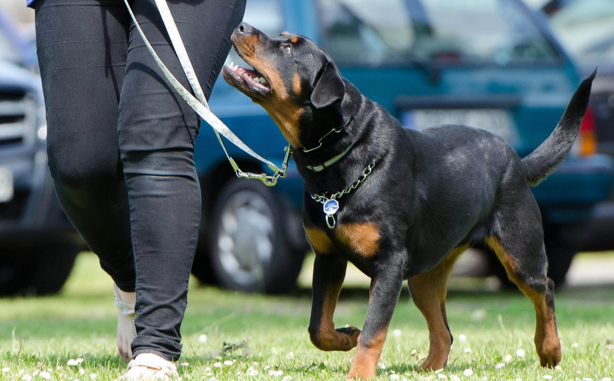

We have a variety of classes available here at Furry Friends. We offer specialised classes for almost anything you could want for your dog. Our trainers are amongst the best in the world, and we pride ourselves on our high success rates.
Puppy training
Have you recently brought a new puppy into the home? Here at Furry Friends, we understand that this can be challenging but our trainers are here to help. We offer a 6-week training course that will run through everything you need to know about establishing a relationship with your dog and developing and maintaining positive habits in your dog. These classes cover everything from toilet training to interacting with other dogs. Our aim is to ensure that when you and your puppy finish your 6-week course you will both be ready to have a smooth transition into adulthood. For more information on pricing please see our booking page
Behavioural training
We understand that for a range of reasons your dog may have behavioural issues, our trainers certified in training dogs with behavioural issues are here to help. Our trainers have experience working with reactive breeds as well as rescues with a difficult past. Depending on the issue you would like to resolve this course can last anywhere from 6 to 12 weeks and we will provide you will all the necessary information to ensure that your relationship with your dog remains happy and healthy. For more information, please see our booking page